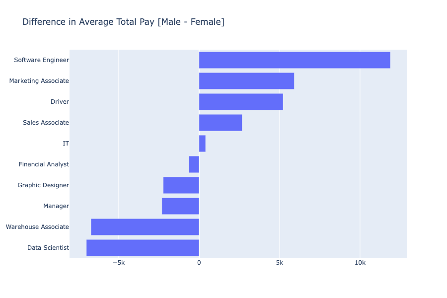
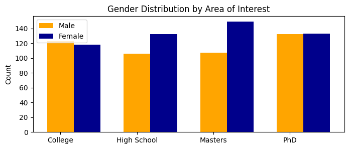

1 Introduction
As the conversation about systemic sexism and gender bias grows, research on the existence of a wage gap becomes increasingly crucial. Economists such as Claudia Goldin, Francine Blau, and Lawrence Katz have conducted extensive studies investigating the factors contributing to the wage gap, exploring issues related to gender, labor markets, and policies affecting income differentials. Institutions like the World Bank, OECD (Organisation for Economic Co-operation and Development), and the Institute for Womens Policy Research have also generated comprehensive reports and analyses, shedding light on global and national trends in gender pay gaps, highlighting disparities across different countries, industries, and demographic segments. Additionally, advocacy groups like the American Association of University Women (AAUW) and Catalyst have produced research focusing on gender inequalities in pay and employment practices, advocating for policy changes and workplace reforms to address these disparities [1]. In our investigation, we delve into the impact of gender on salary and income levels through a machine-learning data analysis approach. Leveraging the power of techniques such as random forest classifiers and regression, we aim to discern whether there exists a correlation between gender and earnings.
As We use the dataset “Glassdoor- Analyze Gender Pay Gap” provided by Kaggle.com to perform our analysis. We note that this dataset is relatively small and any results gathered from our study may not be able to generalize to broad statements about the wage gap and gender discrimination in the workplace. However, by analyzing one dataset, we seek to uncover patterns, dependencies, and potential biases that might manifest in salary distributions across genders. Through this analysis, we aspire to contribute empirical evidence to the ongoing discourse surrounding gender-based income inequalities, offering insights that could inform policy initiatives and organizational strategies toward fostering greater fairness and equity in remuneration practices.
2 Data Visualization
In our project, we began by loading the Glassdoor Gender Pay Gap dataset from Kaggle.com using pandas. The dataset is composed of data about employees from one company. The data is anonymous and reported by the anonymous-company so this creates no ethical issues or doubt in the trustworthiness of the data.
A significant addition to our preprocessing was the combination of BasePay and Bonus columns, followed by normalizing this combined pay. This ensured that our analyses and models considered total earnings rather than just base pay or bonuses separately. By normalizing this combined value, we maintain consistency across different scales of pay and bonus values, allowing for a more accurate comparison and analysis.
We also employed label encoding for categorical data such as JobTitle, Gender, Education, Dept, and Seniority, converting them into numerical values for computational efficiency. This step was vital as most algorithms require numerical input for effective analysis. The dataset, now with normalized pay values and encoded categorical variables, is well-prepared for rigorous statistical analysis and machine learning modeling, ensuring accuracy and reliability in our subsequent analyses and predictions.
Our dataset came with no missing values. This allowed for minimal data cleaning. We decided to proceed with these features to observe if the gender pay gap is observable with basic information that would be considered by employers when considering salaries.
3 Analysis/Visualizations
3.1 Visualization of Data
Before diving into the deep-end of regression and classification, we want to visualize aspects of the dataset that we found interesting. The first characteristic of the data we want to emphasize is the distribution of men and women in each job title.
job_bar_graph()

We see that for the majority of job titles, there are approximately the same amount of men and women in those positions. However, there exist some jobs where the distribution of gender is heavily skewed, such as marketing associate, software engineer, and manager. While our dataset is too small to draw any conclusions about societal trends, we can conclude that not all positions at this company are equal in distribution of gender.
Another visual that we found important for the analysis of our data is comparison of pay between the genders in each job title. Below we visualize a bar graph where we show the difference between the average male total pay and average female total pay (male - female) for each position.
salary_difference()
Being below the average pay of the opposite gender exists for both men and women as seen above. There are some positions where the average male employee make more and some positions where the average female employee makes more. While this graph may appear to answer the original question of the existence of the gender pay graph, we recognize that salary is more complex than just job titles and genders. In the following sections we analyze the other variables that come into play and their importances.
3.2 Education Analysis
To observe the effects that gender has on pay, we analyze subsets of the original dataset grouping by education levels. To begin this analysis we provide a visual of the distributions of gender by education level.
distribution_show(df,label_encoder_education,"Education")
This bar graph depicts the counts of men and women in each education level in our dataset. We see that each education level has more than 100 data points for both genders. Likewise, we observe that in this dataset the distribution of men and women is roughly equal. We want to make note that we provide this visual to provide a more-detailed glimpse into our dataset and we will not conduct an analysis of gender diversity in education. While that would be an interesting subject, it would require a larger dataset and more knowledge about the sampling techniques used to make any reasonable conclusions.
As described above, to analyze the effects that gender plays in pay we used regression models to view the significance of the features and how gender compares. After breaking the data down by education levels and performing gridsearches for the optimal hyperparameters, the results of the random forest regressor, boosted gradient regressor, and xgboost regressor for education are below:
Education Regression Mean Squared Errors
| H.S | College | Masters | PhD | |
|---|---|---|---|---|
| RFR | 0.00463 | 0.00728 | 0.00624 | 0.00753 |
| GBR | 0.00464 | 0.00573 | 0.00646 | 0.00615 |
| XGBR | 0.00303 | 0.00443 | 0.00465 | 0.00437 |
Looking at the table, we can see that the xgboost regressor achieved the lowest mean square errors. For the purposes of this paper, we will analyze the most important features for this model. The ranked features are listed for each education level in the table below.
Feature Importance
| Ranking | H.S | College | Masters | PhD |
|---|---|---|---|---|
| 1 | Seniority: 0.44 | Seniority: 0.29 | Seniority: 0.55 | Seniority: 0.47 |
| 2 | Age: 0.27 | Gender: 0.17 | Age: 0.20 | Age: 0.27 |
| 3 | Job title: 0.13 | Job Title: 0.12 | Gender: 0.10 | Job Title: 0.17 |
We can see that gender is never the most important feature to estimate. Likewise, it is very rare for gender to have importance greater than 0.1 with college and masters being the only education levels with gender as an important features.
Now moving onto classification. We sought to classify an employee's gender and analyze which features are most important. We performed gridsearches on the random forest, boosted gradient, and xgboost classifierusing the same datasets for each. From there, we analyzed the results. The accuracies for each model are displayed below.
Education Classification Accuracy
| H.S | College | Masters | PhD | |
|---|---|---|---|---|
| RFC | 0.58 | 0.69 | 0.58 | 0.54 |
| GBC | 0.62 | 0.67 | 0.54 | 0.60 |
| XGBC | 0.64 | 0.73 | 0.58 | 0.62 |
Once again, the xgboost provided the best results. Below, we display the most important features of that model and their significances.
Feature Importance
| Ranking | H.S | College | Masters | PhD |
|---|---|---|---|---|
| 1 | Job title: 0.30 | Base Pay: 0.21 | Base Pay: 0.20 | Dept.: 0.18 |
| 2 | Age: 0.16 | Dept.: 0.16 | Job Title: 0.17 | Seniority: 0.18 |
| 3 | Base Pay: 0.13 | Age: 0.15 | Bonus: 0.13 | Job Title: 0.17 |